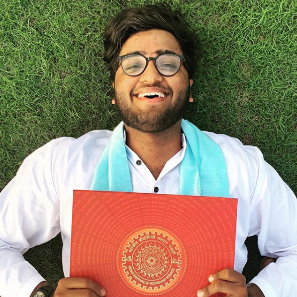

Hey, I am Ayush.
I am a graduate student at Department of Computer Science, Brown University. I am fortunate to be advised by Theophilus Benson at Brown and Marco Ruffini during my time as Research Assistant at CONNECT. Prior to that, I had the opportunity to work with Paul Patras at School of informatics, University of Edinburgh in the field of Mobile Edge Computing. I am broadly interested in SDN, Edge Computing, Distributed systems and curious about their mix-match.
I graduated from IIT Roorkee with a first class degree in Electrical Engineering. I was a Trainee R&D at STMIcroelectronics under the supervision of amazing Mr. Pratap Narayan Singh. Parallel to my intern at STMicroelectronics, I was also awarded the prestigious Summer Undergraduate Research Award by Sponsored Research and Industrial Collabration (SRIC) IIT Roorkee.
I am everywhere


[ What I have been upto !]
[March 2021] Our study on bugs in SDN has been accepted at DSN'21.
[March 2021] Our paper on gOSNR based QoT Estimation and a demo on Virtual Optical x-Haul Testbed have been accepted at OFC'21.
[January 2021] Joined Brown CS as a graduate student.
[October 2020] Attended the COSMOS Workshop where the capabilities of our project Optical-Mininet were demonstrated.
[June 2020] Volunteered in ICC'20.
[February 2020] Started working on the iLife Project at CONNECT.
Ayush Bhardwaj, Ajay Rahul, Shivam Maloo, Nipun Pruthi, Sateesh K. Peddoju ”HaPT: Handover Prediction Using TemporalData for Improved QoS in RAN”, APNET’19 (3rd ACM Asia-Pacific Networking Workshop) Co-located with SIGCOMM2019
[November 2019] Attended the IEEE "Optical Communication Technologies for 5G Wireless" course.
[September 2019] Joined as Research Assistant at School of Computer Science and Statistics, Trinity College Dublin to work on SDN interfacing.
[August 2019] HaPT accepted at ACM APNET'19 (Asia Pacific Networking Workshop) co-located with SIGCOMM 2019
Ayush Bhardwaj, Ajay Rahul, Shivam Maloo, Nipun Pruthi, Sateesh K. Peddoju ”HaPT: Handover Prediction Using TemporalData for Improved QoS in RAN”, APNET’19 (3rd ACM Asia-Pacific Networking Workshop) Co-located with SIGCOMM2019
[August 2019]
EYE accepted at 2nd Springer International Conference on Intelligent Data Communication Technologies and Internet of Things.
Ayush Bhardwaj, Vishal Singh, Umesh Kumawat, SP Singh ”EYE : Rethinking Electrical Distribution Network with In-ternet of Things”.
Some other things, I love.

I have an admiration for social action and am always curious to apply my engineering skills to work for a cause. I strongly believe in Enactus the moto "We all win" with social entrepreneur action. I have been a part of Enactus IIT Roorkee to work on projects related to waste management, supporting 4 out of UN's 17 sustainable goals. I am also a part of Enactus Trinity College Dublin team and working on tackling homelessness and unemployability in Ireland. I have also been a part of National Service Scheme IITR to teach children of unprivileged section of society for free and organize Blood Donation drives.
I love travelling, hanging out with people from everywhere and try to know every person I can. I am really proud of my amazing friends and am excited to meet new incredible people in near future. In my spare time, I like to read interesting stuff on internet like MIT Tech review, one article that caught my eye recently is "Google’s big plan to fight tech addiction: A piece of paper". If time permits, my favourite Netflix goto show is Patriot ACT with Hasan Minhaj. I also seek for any adventure sports out there near me.
PS: That's a real tiger.
[Coursework]
Graduate Courses:
Logic for Systems [CS171]
Institutional Courses:
Programming in C++, Fuzzy Systems, Numerical Methods, Network Theory, Advanced ControlSystems, Mathematics-I, Mathematical Methods, Engineering Analysis and Design, Microprocessors and peripheral devices,Introduction to Robotics, Intelligent Sensors and Instrumentation.
Additional Courses:
Introduction to SDN, Windows Phone 8.1 Development for absolute Beginners [Microsoft VirtualAcademy], Windows Store App Development Essentials with C# Refresh.
Languages:
C++ , Python, Matlab, Lua ,Unity Script, CSS, Bash, Forge/Alloy.
[Research Projects at Brown Univeristy]
Microservice Tuning
Research Assistant — Advisor : Theophilus Benson | Jan. 2021 – Present.
◦Working to understand the depth of metrics enabled by eBPF.
◦ Understanding the effects of configurations updates across the service graph
[Research Projects at Trinity College Dublin]
SDN interface for Optical Telemetry
Research Assistant — Advisor : Dr.Marco Ruffini | Jul. 2019 – Present.
◦Working with CIAN, University of Arizona to develop SDN interface for an interrogator in Dual WSS ROADM architecture and testing it with COSMOS Optical Testbed.
◦ Working with Pilot Photonics to develop an SDN Controller for Optical frequency combs based on ONOS using NETCONF.
◦ Working on Optical-mininet to enable optical emulation of hardware testbeds in Python.
[Research Projects at IITR]
Bandwidth Aggregation in a Multi-ISP setup using SDN
Advisor: Dr. Pyari Mohan Pradhan | Jan. 2018 – Apr. 2018
◦Deploying a bandwidth aggregation scheme employing Weighted Round-Robin Scheme as an application for floodlightcontroller using Openflow protocols.
HaPT: Load Balancing in RAN using Temporal Data for improved QoS
Advisor: Prof. Sateesh Kumar Peddoju — B.Tech Thesis | Nov. 2018 – May. 2019
◦Working on Intra-LTE Handover for Load balancing using Temporal data of the permanent user equipment.
Conditional Monitoring Network for Distributed Transformers
Advisor: Dr. SP Singh | May. 2017 – Jul. 2017
◦Long range Radio Communication at 433- 473 MHz was used to deploy CW1SN Network Topology.
[Hobby Projects at IITR]
Virtual Training using HMD‘S
◦Utilized Unity 3D and Google cardboard SDK, Arduino SDK, Raspberry PI for realistic game simulations and won the best innovative project in Shristi [Annual Technological Exhibition of IITR].
Virtual trial room and VR Maze Runner
◦The project used kinect libraries to map hand gestures for cloth trials and the maze runner utilized game physics coded in unity scripts for implementing the "Maze Runner" movie.